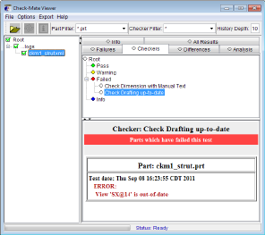
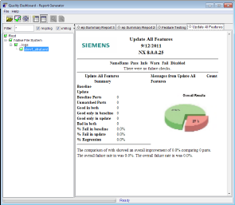

质量仪表板实用工具(QDASH)提供两个工具：
|
Check-Mate 查看器 |
报告生成器 |
|
Check-Mate 查看器是用于检查 Check-Mate 外部日志文件中结果数据的原始实用工具。查看器的输出包括多个固定格式的报告，这些报告可为您提供查看 Check-Mate 结果的典型方法。 您可以从各种文件夹中将 Check-Mate 日志文件加载到查看器内。 该查看器可处理多个日志文件以确定当前的状态或趋势。 |
The Report Generator lets you create an unlimited variety of reports from Check-Mate report data. 当在 NX 中或批处理模式下运行 Check-Mate 时，它会在指定的目录中搜索生成的文件。此外，QDASH 还可以与 Teamcenter engineering process management 建立接口，以查找和处理存储在此处的 Check-Mate 日志文件。Check-Mate 数据可以是日志文件的格式，也可以是 XML 日志文件或者 XML 报告数据。 与原始 Check-Mate 查看器相比，QDASH 实用程序的一些优势在于：
|
|
 |
 |
QDASH 实用工具作为使用 Java 的外部程序运行，不需要任何 NX 工具或许可证。
|
先决条件 |
Java Runtime |
|
先决条件 |
应用程序 qdashboard.bat(Windows 平台)或者 qdashboard.sh(非 Windows 平台) 必须允许执行权限。请咨询系统管理员以获得帮助。 |
|
开始菜单 (Windows) |
开始→所有应用程序→SIEMENS NX [#]→NX 工具→质量仪表板 |
|
Dock (Macintosh) |
应用程序→SIEMENS NX [#]→NX 工具→质量仪表板 |
|
Ugmenu (Linux) |
执行 ugmenu. UniProducts Activity Menu Version [#]→质量仪表板 |
|
系统命令 (Windows) |
%UGII_BASE_DIR%\DESIGN_TOOLS\checkmate\tools\quality_dashboard\qdashboard.bat |
|
系统命令 (Non-Windows) |
%UGII_BASE_DIR%/DESIGN_TOOLS/checkmate/tools/quality_dashboard/qdashboard.sh |